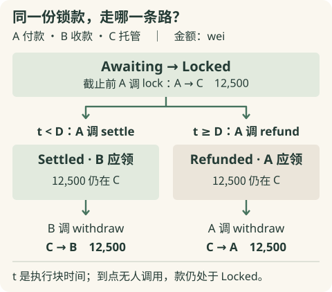

先修：第 13 课的 ABI、调用数据与持久状态，以及第 12 课的回执与确认。本课用 一份合约管一笔原生测试 ETH。A 同时是部署者和验收人；B 是供应方；没有第三方仲裁者。合约替双方执行约定，不替双方判断货是否合格。这里只在 Forge 的内存 EVM 中操作，不需要钱包、节点或私钥。
先把发货、结算、领取拆成三张单
物流单能说明 B 声称已经交货，不能改 C 的存储；C 没有读物流系统的接口。A 在链下验收后，必须在截止前成功调用 settle()。这一步只形成 C 对 B 的应付账款，即 credit(B)。B 再调用 withdraw()，C 才把 ETH 转给 B。合约没有 ship()，也没有「平台管理员手工改成已到账」的入口。
单据的区别会改变交付决策。B 看见锁款可以知道钱进了 C，但 A 仍可能一直不验收，等超时后退款。因此这不是保证供应方一定拿到货款的仲裁托管。A 看见 Settled，也不能承诺钱已经进了 B 的地址；B 要看自己的应领或领取记录。若业务要求快递签收自动放款、双方都能仲裁或分期收款，要另立需求，不能靠界面换个按钮名字得到。


把合同条款写成转移表
部署 C 时，构造函数把 这次部署的调用者定为 payer，把另一个非零地址定为 payee，并要求 deadline 严格晚于部署块时间。这三个值不可改。State 是枚举，state() 依次用 0/1/2/3 表示 Awaiting/Locked/Settled/Refunded；新合约的默认值是第一项。credit(address) 查询指定地址的应领，默认是零。这里的 public 是可以查，不是可以改。
设执行当前调用的块时间为 t，截止为 D；表中 m 始终指实际锁入的正整数 wei。
| 原状态 | 谁、何时、做什么 | 新状态及资金效果 | 成功事件 |
|---|---|---|---|
Awaiting |
A，t < D，lock{value: m}()，m > 0 |
Locked；A → C，记录这单的 m |
Locked(A, m) |
Locked |
A，t < D，settle() |
Settled；给 B 记 credit(B)=m，不转 ETH |
Settled(B, m) |
Locked |
A，t >= D，refund() |
Refunded；给 A 记 credit(A)=m，不转 ETH |
Refunded(A, m) |
Settled 或 Refunded |
有非零应领的那个人，withdraw()，无时间限制 |
仍在原终态；自己的应领清零，C → 自己，金额 m |
Withdrawn(领取者, m) |
为什么等号要单独写？ block.timestamp 是执行块的 Unix 秒，不是 System.currentTimeMillis() 的毫秒，不是下单时间，也不是钱包弹出签名窗口的时间。锁款和结算共用 < D，退款用 >= D，在 D 没有两个选项同时可选，也没有无人有权处理的一秒。真实链不保证恰有一个块的时间戳等于 D；实际能退款的是第一个满足条件且执行该调用的块。发送得早、打包得晚的结算仍可能失败。
时间推进只改变下次允许的操作，不会唤醒代码。Locked 的单子过了 D 而 A 未操作，state() 仍是 Locked，A 暂时也没有应领。A 必须先 refund() 再 withdraw()。若截至 D 连钱都没锁，状态仍是 Awaiting，随后锁款将被拒绝；这时没钱可退。
读实现：钱从哪来，授权看哪一层
打开唯一的业务合约 MilestoneEscrow.sol。沿着 lock → settle/refund → withdraw 读，不用先记语法大全。
- 入金。
lock()是external payable：允许这次外部调用附原生 ETH；不会自动要求附款，也不规定金额。onlyPayer比的是当前这层调用的msg.sender，不是前端传进来的姓名，也不是整条调用链最初的tx.origin。合约随后检查起始状态、截止以及msg.value != 0。通过才把msg.value存进deposit并改状态。第二次调lock()不能给原单追加金额；普通空数据直转也不是这张单的锁款入口。 - 裁决。
settle()和refund()均要求state == Locked，但检查相反的时间区间，且分别把deposit记给 B 或 A。它们不按address(this).balance判金额：那个值是整个地址持有的 ETH，不是这张订单的入金凭证。deposit保存原始锁款额，credit是当前还欠多少，已结算时不能把这两个数加起来当作欠款。终态没有回到待付款的入口，所以一次成功裁决只记一次应领。 - 付款。
withdraw()没有收款地址参数。下面是实现中的关键四句；执行前已从credit[msg.sender]读出非零amount。先消掉债权，再做外部调用；收款若失败，最后的revert使本次领取整体回退，清零也撤销。已经成功提交的上一次结算不因此取消。
credit[msg.sender] = 0;
(bool sent,) = payable(msg.sender).call{value: amount}("");
if (!sent) revert WithdrawalFailed();
emit Withdrawn(msg.sender, amount);
为什么不在 settle() 中顺便打款？结算只需改变本合约的状态；打款可能执行接收方合约的代码，也可能被拒收。把两步分开，付款者的验收不必同步等供应方接受 ETH，但不保证收款地址能领。部署条款时须确认收款方能发起领取并接受 ETH；这里只有自己领，没有代领或改收款地址的后门。
四个业务事件均有一个 indexed 地址和一个未索引的 uint256 amount。例如真实回执里，C 是发出日志的地址，Settled(address,uint256) 的签名哈希在 topics[0]，B 在 topics[1]，金额在 data。B 是受益人，不是发起结算的人。日志用于追溯成功动作，getter 用于读某个块的结果；对账时还要核链、合约地址及回执所在块，不能凭同名事件就放货。Forge 下面还会显示测试夹具自己的记录，它们不属于 C 的 ABI。
跟一轮账：在 D−1 结算
依赖：本卷工具与安装，Foundry 1.7.1、已安装或缓存的 solc 0.8.28；工程配置固定 Cancun、优化 200 runs。没有第三方 Solidity 库。先从仓库根目录进入工程；本课后续命令都在 labs/m04/，使用 Bash 或 zsh：
cd labs/m04
forge --version
set -o pipefail
forge test --offline --match-contract EscrowTransitionsTest --match-test '^testSettleAtDMinusOne' -vvvv | tee /tmp/m04-settle.trace
EscrowTransitions.t.sol 的 setUp() 为每个测试重新部署。vm.deal 给内存地址 A、B 分别配 25,000、12,500 wei 测试余额；vm.prank(A) 令下一次部署或调用的直接调用者为 A，不是签名服务；vm.warp 设置本地执行时间，不会修改部署好的 D。这些接口只在测试夹具中出现。取 T0=1700000000、D=T0+60=1700000060，把第一笔 12,500 wei 在 T0 锁入，令决定时的 t=1700000059。
在输出中找 [PASS] testSettleAtDMinusOne() 和 emit Ledger。下表是预期账页（不是实跑记录）；Ledger 是测试从 state()、C 的余额、credit(A) 和 credit(B) 读值并核对后才发的观察记录。四个数的顺序与事件相同，后三列均为 wei。
Ledger.step |
state |
C 实存 | A 应领 | B 应领 |
|---|---|---|---|---|
awaiting |
0 | 0 | 0 | 0 |
locked |
1 | 12,500 | 0 | 0 |
early-refund-rejected |
1 | 12,500 | 0 | 0 |
settled |
2 | 12,500 | 0 | 12,500 |
withdrawn |
2 | 0 | 0 | 0 |
读 trace 的缩进：在 MilestoneEscrow::refund() 里看到 TooEarly()，这是测试预期的拒绝，说明还差一秒才到退款窗口。随后 settle() 成功，settled 那行的实存和应领是同一笔钱的资产、负债两面。最后 withdraw() 下才有 C 带值调用 B 和 Withdrawn(B,12500)，夹具核对 B 的余额增量恰为 12,500 wei。vm.expectEmit 会先列一条测试端的期望模板；只把 C 的调用内部那条当作 C 发出的事件，不能把金额加两次。
这是 Forge 测试内的调用树，不是三笔带交易哈希的公网回执。测试里的余额差不含模拟角色单独发送交易的 gas 费；在真实外部领取交易中，领取者若也付 gas，钱包余额净增不会简单等于应领。gas 数、合约地址、显示缩进不是本题判据。
只把决定推迟一秒
保持 A、B、D、C 的初始条款和入金不变。先预测：若仍由 A 调 settle()，t 从 D−1 改为 D，哪一格会变？再跑第二个独立场景：
forge test --offline --match-contract EscrowTransitionsTest --match-test '^testRefundAtD' -vvvv | tee /tmp/m04-refund.trace
预期 deadline-without-call 为 (1,12500,0,0)；时间已经到点，但钱未自动退。A 的 settle() 应以 DeadlineReached() 拒绝，late-settle-rejected 还是 (1,12500,0,0)。现在 A 改走 refund()，refunded 才变成 (3,12500,12500,0)；A 领取后 withdrawn 为 (3,0,0,0)。成功事件应是 Locked(A,12500)、Refunded(A,12500)、Withdrawn(A,12500)，不是 Settled。这个对照用 vm.warp(D) 精确检查代码的等号，不是在承诺真实区块按秒产生。
哪些请求必须被拒绝？
检查拒绝不能只看「报过错」：先让其他条件都合法，再断言指定错误以及原账页未改。例如 B 有测试余额，B 尝试锁款失败才确实能区分「没权限」和「付不起」。从同一目录运行其余测试；去掉 --match-test 即运行本课全部六个用例：
forge test --offline --match-contract EscrowTransitionsTest --match-test '^testReject' -vvvv | tee /tmp/m04-reject.trace
| 夹具场景 | 被拒的调用 | 预期错误及留下的证据 |
|---|---|---|
testRejectBadLocks |
A 零入金；B 带足款锁；A 在 D 首次锁 | 依次 ZeroDeposit、PayerOnly、DeadlineReached；均为 (0,0,0,0) |
testRejectWrongDecisionMaker |
已锁，B 在 D−1 结算；B 在 D 退款 | 两次 PayerOnly；仍是 (1,12500,0,0) |
testRejectSecondSettlement |
已结算，A 再结算；A 冒领；B 成功领后再领；A 试图重开 | 依次 WrongState、NoCredit、NoCredit、WrongState；第二次结算后 B 仍只应领 12,500，最后 (2,0,0,0) |
testRejectInvalidTerms |
部署时 B 为零地址、等于 A，或 D 恰等于部署时刻 | 前两次 InvalidPayee，末次 DeadlineNotFuture；三次都不产生可用的新实例 |
若测试本身 [FAIL]，先看失败发生在「预期某个 revert」还是 Ledger 校验；前者从调用者、前态和执行块时间找差异，后者逐项核对 state()、C 的余额和两个地址的应领。失败调用的业务改账与日志会回退，但真实链上的失败交易若已入块，仍会付费。
独立工单：过期的是订单，还是领取权？
客服收到一张已在 D−1 成功结算、到 D+3600 仍无人领取的单子。A 请求退款，B 则认为自己错过了领取时间。不要修改业务合约。在你自己的练习副本中，给 EscrowTransitionsTest 新增 testHomeworkLatePickup()：先锁款、在 D−1 结算，再将时间移至 D+3600，依次尝试 A 退款、B 领取，保留调用前后账页。可复用夹具里的 _lock()、_settle()、_row()、_withdraw()；不要只在 Java 端模拟状态。方法写好后运行：
forge test --offline --match-contract EscrowTransitionsTest --match-test '^testHomeworkLatePickup' -vvvv | tee /tmp/m04-late-pickup.trace
交付新增测试源码、含一个匹配并通过的测试的完整 trace，以及给财务的一句话处理意见。答案判据：A 虽然等到 D 之后，仍因前态是 Settled 得 WrongState()；失败后 C 实存和 B 应领各 12,500 wei；B 领走 12,500 后两者都归零而 state 仍为 2。应告诉财务「不再付款；以这次由 C 发给 B 的 Withdrawn 与账页对上原单」，不能说「到了 D，结算自动作废」。
原文核对
- Solidity 0.8.28：区块与交易上下文：核对
block.timestamp、msg.sender和msg.value的单位与作用范围。 - Solidity 0.8.28：常见合约模式：比较状态机与拉取式付款；本单自己的边界仍由合同条款决定。
- ABI 规范：Events：核对日志地址、topics 与 data 的分工。
- Foundry：读 Forge 调用跟踪：用
-vvvv查看通过场景的内部调用、返回和回退。